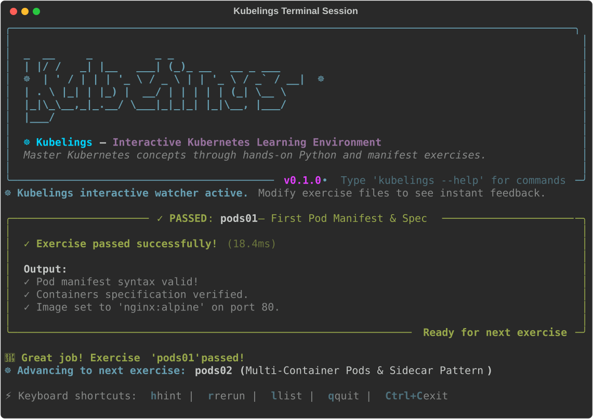

Kubelings Onboarding & Learner's Guide ☸️
Welcome to Kubelings! Whether you are completely new to Kubernetes or an experienced engineer looking to sharpen your production troubleshooting and YAML authoring instincts, this guide will walk you through everything you need to get up to speed in minutes.
1. What is Kubelings?
Kubelings is an interactive, test-driven learning platform inspired by Rustlings and Ziglings. Rather than reading passive documentation or copying opaque manifests, you learn Kubernetes by actively diagnosing, editing, and verifying micro-exercises directly in your favorite code editor and terminal.
🌟 Core Pedagogical Principles
+-----------------------+ +-----------------------+ +-----------------------+
| Active Debugging | | Sub-30ms Validation | | Test-Driven Mastery |
| Every exercise starts| ---> | In-memory schemas | ---> | Exercises pass only |
| intentionally broken | | evaluate in < 30ms | | when real assertions |
| with clear # TODOs | | with zero API latency| | and schemas succeed |
+-----------------------+ +-----------------------+ +-----------------------+
- Active Debugging: Every exercise starts in an intentionally broken or incomplete state with clear
# TODO:instructions. You inspect the diagnostic error output and fix the code. - Sub-30ms Instant Feedback: All manifests and resource specifications are evaluated in-memory locally. You get instant validation on file save without waiting for remote API server roundtrips.
- Test-Driven Mastery: Exercises pass strictly when genuine Kubernetes schema validations, constraints, and controller assertions succeed. No magic comments required!
- Dual-Mode Flexibility:
- Offline Mode: 100% of the 26 chapters work entirely offline with zero cluster installation needed.
- Live Cluster Mode: Seamlessly connect to
kind,minikube,k3d, or remote clusters for live reconciliation testing in isolated ephemeral namespaces.
2. Quickstart & Installation
You can start learning Kubernetes in under 10 seconds without cloning the repository or configuring dependencies.
Option A: Zero-Install Instant Run (Recommended)
Using uvx (part of Astral's ultra-fast uv Python toolchain):
# Launch the interactive guided tour
uvx kubelings tour
# Scaffold exercises in your current workspace and start watching
uvx kubelings init
uvx kubelings watch
Or using pipx:
Option B: Global CLI Installation
# With uv
uv tool install kubelings
# With pipx
pipx install kubelings
# Start your journey
kubelings tour
Option C: Local Git Repository Clone
If you are developing or contributing to Kubelings:
git clone https://github.com/dnf0/kubelings.git
cd kubelings
uv venv
source .venv/bin/activate
uv pip install -e ".[dev]"
# Launch the guided tour
kubelings tour
3. The Interactive CLI Tour (kubelings tour)
The fastest way to understand how Kubelings works is to run the built-in interactive tour:
__ __ ___
/ /____ __/ /_ ___ / (_)___ ____ ______
/ //_/ / / / __ \/ _ \ / / / __ \/ __ `/ ___/
/ ,< / /_/ / /_/ / __/ / / / / / / /_/ (__ )
/_/|_|\__,_/_.___/\___/ /_/_/_/ /_/\__, /____/
/____/
The tour guides you through 5 rich, color-coded steps:
| Step | Title | What Happens |
|---|---|---|
| 1 | Welcome & Philosophy | Introduces test-driven micro-learning and in-memory verification. |
| 2 | Environment Verification | Probes your Python runtime, exercise workspace, and checks for active Kubernetes clusters (while confirming pure offline mode readiness). |
| 3 | Workflow & Hotkeys | Details the inner watch loop, file saving triggers, and terminal keybindings. |
| 4 | Guided First Exercise | Live-evaluates exercises/01_pods/pods01.yaml, shows real failure diagnostics, explains required schema attributes, and displays the solution diff. |
| 5 | IDE Tooling & Next Steps | Introduces the VS Code / Cursor extension and gives a 1-click launch into kubelings watch. |
Tour CLI Flags
kubelings tour --step 4: Jump straight to a specific step (1–5).kubelings tour --non-interactive: Run through all steps without pausing for keypresses (great for automated scripts or quick refreshers).kubelings tour --json: Output structured JSON metadata of the tour and steps.
4. The Inner Learning Loop
Mastering Kubernetes with Kubelings follows a simple, addictive 5-step rhythm:
1. RUN
+--------------------------------------------------------+
| $ kubelings watch |
+--------------------------------------------------------+
|
v
2. OPEN
+--------------------------------------------------------+
| Open active file in editor (e.g. pods01.yaml) |
+--------------------------------------------------------+
|
v
3. EDIT & SAVE
+--------------------------------------------------------+
| Read # TODO: comments, fix YAML manifest, press SAVE |
+--------------------------------------------------------+
|
v
4. INSTANT EVALUATION (< 30ms)
+--------------------------------------------------------+
| FAIL ❌ -> Inspect error panel, use hints ('h') |
| PASS ✓ -> Terminal turns green, celebration banner |
+--------------------------------------------------------+
|
v
5. ADVANCE
+--------------------------------------------------------+
| Press [n] or [Enter] to move to the next exercise! |
+--------------------------------------------------------+
Interactive Hotkeys in Watch Mode
While kubelings watch is active in your terminal, use these keyboard shortcuts at any time:
| Key | Action | Description |
|---|---|---|
n / Enter |
Next | Advance to the next incomplete or subsequent exercise. |
p |
Previous | Return to the previous exercise to review or experiment. |
h |
Hint | Reveal the next progressive hint tier for the current exercise. |
r |
Rerun | Force an immediate re-evaluation of the current exercise. |
l |
List | Display the full curriculum syllabus with completion status. |
q |
Quit | Exit the file watcher cleanly. |
5. Walkthrough: Solving Your First Exercise (pods01)
Let's walk through solving the very first exercise in the curriculum: exercises/01_pods/pods01.yaml.
Step 5.1: Initial State & Failure Inspection
When you start kubelings watch, you will see:
======================================================================
EXERCISE: exercises/01_pods/pods01.yaml
TOPIC: First Pod Manifest & Spec
======================================================================
[FAIL] Manifest validation failed:
• Spec Error: Container 'nginx' must expose containerPort 80
• Spec Error: Pod metadata missing required label 'app: web'
Step 5.2: Inspecting the Starter Code
Open exercises/01_pods/pods01.yaml in your code editor:
# Exercise: exercises/01_pods/pods01.yaml
# Topic: First Pod Manifest & Spec
#
# Instructions:
# Fix the YAML manifest below to define a valid Pod named 'nginx-web'
# running nginx:alpine on container port 80 with label 'app: web'.
apiVersion: v1
kind: Pod
metadata:
# TODO: Set the Pod name to 'nginx-web'
name: ???
labels:
# TODO: Add label 'app: web'
app: ???
spec:
containers:
- name: nginx
# TODO: Set container image to 'nginx:alpine'
image: ???
ports:
# TODO: Set containerPort to 80
- containerPort: 0
Step 5.3: Applying the Fix
Fill in the blanks with the correct values:
apiVersion: v1
kind: Pod
metadata:
name: nginx-web
labels:
app: web
spec:
containers:
- name: nginx
image: nginx:alpine
ports:
- containerPort: 80
Step 5.4: Watching it Turn Green
Save the file. Within 30 milliseconds, the watcher updates:
======================================================================
✓ exercises/01_pods/pods01.yaml PASSED!
======================================================================
[n/Enter] Next exercise | [p] Previous | [h] Hint | [q] Quit
Press Enter or n to advance directly to pods02.yaml!
6. VS Code & Cursor Extension 💻
For the ultimate development experience, install the official Kubelings Extension for Visual Studio Code and Cursor.

Features
- Interactive Guided Walkthrough:
- Built directly into the editor (
contributes.walkthroughs). - Open it at any time via the Command Palette:
Kubelings: Open Welcome Walkthrough. - Step-by-step onboarding with live action buttons to open exercises, run checks, and launch watch mode.
- Curriculum Tree View:
- Browse all 26 chapters and 114 exercises directly in the VS Code Activity Bar.
- Live checkmark icons (✓ / ❌) indicate pass/fail progress.
- Persistent Status Bar:
- Displays completion percentage (e.g.
☸ Kubelings: 42% (48/114) | Next: sched02). - Click to instantly jump to your current active exercise.
- On-Save Diagnostics & Error Squiggles:
- Whenever you save
exercises/**/*.py, the extension runs in-memory evaluation. - Missing fields, invalid types, or broken schema constraints are highlighted with inline red squiggles.
- Quick Fixes & Solution Diffing:
- Hover over any error to trigger Code Actions.
- Reveal Progressive Hint: View hint tiers inside the editor.
- Compare with Reference Solution: Opens a side-by-side diff comparing your exercise against the official solution.
Installing the Extension
From Command Line (VSIX):
# VS Code
code --install-extension dist/kubelings-vscode.vsix
# Cursor
cursor --install-extension dist/kubelings-vscode.vsix
From Editor UI:
- Press
Ctrl+Shift+X(orCmd+Shift+Xon macOS). - Click the
...menu in the top right corner of the Extensions view. - Select Install from VSIX... and select
dist/kubelings-vscode.vsix.
7. Curriculum & Progression Roadmap
Kubelings covers 26 comprehensive chapters organized into 6 progressive learning tiers:
+-------------------------------------------------------------------------------+
| TIER 1: Fundamentals (Chapters 1–5) |
| Pods -> Controllers & Deployments -> Config & Secrets -> Storage -> Services |
+-------------------------------------------------------------------------------+
|
v
+-------------------------------------------------------------------------------+
| TIER 2: Operations & Traffic (Chapters 6–10) |
| Ingress -> Scheduling & Affinity -> RBAC -> Network Policies -> Health Probes|
+-------------------------------------------------------------------------------+
|
v
+-------------------------------------------------------------------------------+
| TIER 3: Production Mastery (Chapters 11–13) |
| Autoscaling (HPA/VPA/KEDA) -> Custom CRDs & Operators -> Troubleshooting |
+-------------------------------------------------------------------------------+
|
v
+-------------------------------------------------------------------------------+
| TIER 4: Cloud-Native Ecosystem (Chapters 14–18) |
| GitOps (ArgoCD) -> Service Mesh (Cilium) -> Policy as Code -> Webhooks |
+-------------------------------------------------------------------------------+
|
v
+-------------------------------------------------------------------------------+
| TIER 5: Advanced Infrastructure (Chapters 19–23) |
| Helm -> Kustomize -> Gateway API -> Crossplane -> eBPF Tetragon |
+-------------------------------------------------------------------------------+
|
v
+-------------------------------------------------------------------------------+
| TIER 6: AI & ML Platform Engineering (Chapters 24–26) |
| KubeRay (Distributed ML) -> Kueue & Volcano (Batch) -> Hardware Accel & DRA |
+-------------------------------------------------------------------------------+
Full Curriculum Syllabus
| Tier | Chapters | Topics Covered | Exercises |
|---|---|---|---|
| Tier 1: Core | 01–05 | Pods, Multi-container Sidecars, Deployments, StatefulSets, ConfigMaps, Secrets, PV/PVCs, ClusterIP/NodePort/LoadBalancer Services. | 27 |
| Tier 2: Ops | 06–10 | Ingress TLS, Affinity/Anti-Affinity, Taints/Tolerations, RBAC Roles/Bindings, NetworkPolicies, Liveness/Readiness/Startup Probes. | 22 |
| Tier 3: Prod | 11–13 | HPA/VPA/KEDA Autoscaling, CustomResourceDefinitions (CRDs), Python Operators, CrashLoopBackOff, OOMKilled, Incident Debugging. |
13 |
| Tier 4: Mesh | 14–18 | ArgoCD GitOps, Cilium eBPF L7 Policies, Kyverno/OPA Gatekeeper Policies, Virtual Clusters, Mutating/Validating Webhooks. | 20 |
| Tier 5: Scale | 19–23 | Helm v3 Charts & Schemas, Kustomize Overlays, Next-Gen Gateway API, Crossplane XRDs/Compositions, Tetragon Kernel Tracing. | 20 |
| Tier 6: AI/ML | 24–26 | Distributed RayClusters, RayJob fine-tuning, RayService, Kueue Quotas/Borrowing, Volcano Gang Scheduling, NVIDIA MIG, Apple Silicon GPU & MPS, DRA, vLLM. | 12 |
8. Essential Commands Cheat Sheet
Keep these commands handy as you work through the curriculum:
| Task | Command | Description |
|---|---|---|
| Interactive Tour | kubelings tour |
5-step guided walkthrough with live checks. |
| Watch Mode | kubelings watch |
Continuous learning loop with hotkey navigation. |
| Watch from Specific Exercise | kubelings watch --start sched01 |
Start watching from a specific exercise. |
| Run Single Exercise | kubelings run pods01 |
Evaluate a single exercise once. |
| Progressive Hints | kubelings hint pods01 |
Show hint tier 1, 2, or 3. |
| Curriculum Progress | kubelings verify |
Run full curriculum evaluation dashboard. |
| Syllabus List | kubelings list |
List all 26 chapters and 114 exercises. |
| Topology Visualizer | kubelings tree pods01 |
Render resource relationship tree. |
| Manifest Linter | kubelings lint <path> |
Audit manifests for security and reliability. |
| Terminal Dashboard | kubelings tui |
Full-screen terminal dashboard. |
| Reset Exercise | kubelings reset pods01 |
Restore exercise back to clean starter code. |
| Cluster Status | kubelings cluster |
Check offline mode vs live cluster context. |
9. Next Steps
Ready to start your Kubernetes mastery journey?
- Run
kubelings tourin your terminal. - Launch
kubelings watch. - Open
exercises/01_pods/pods01.yamland write your first Pod!
Have fun and happy Kubeling! ☸️